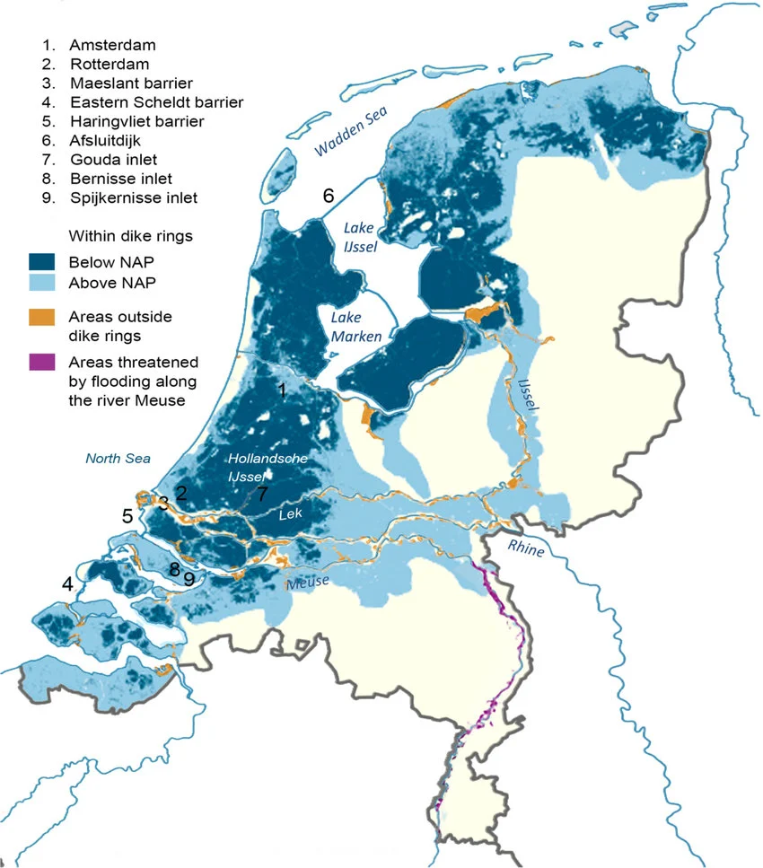
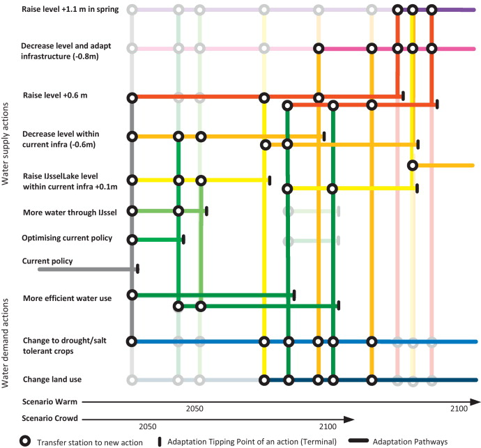

Case Studies: Dynamic Adaptive Policy Pathways
Lecture
Monday, April 13, 2026
Background and Context
Today
Background and Context
Room for the River
Current Debates
Dynamic Adaptive Policy Pathways
Wrap-up and Connecting
The Netherlands

Figure 1: Flood-prone zones (blue) and key flood defense infrastructure. Source: M. Haasnoot et al. (2020).
A Long History of Flooding
The Dutch have been fighting water for centuries.
- 1404, 1421: St. Elizabeth Floods reshape the coastline
- 1530, 1570: Catastrophic North Sea floods kill tens of thousands
- 1916: Zuider Zee flood triggers first modern flood protection program
- 1928-1943: Repeated studies find dikes “seriously defective” — repairs delayed by WWII
Then came 1953.
February 1, 1953

Figure 2: Aerial view of flooding in the Netherlands, 1953. Source: Wikimedia Commons (public domain).
“Never Again”
The 1953 disaster reshaped Dutch politics.
- The Delta Commission was formed within weeks
- Parliament committed to a 1-in-10,000 year protection standard for critical infrastructure
- The result: a 40-year, multi-billion euro construction program
The Delta Works
Figure 3: The Maeslantkering storm surge barrier. Source: Wikimedia Commons / Rens Jacobs (CC BY-SA).
Think-Pair-Share (90 seconds)
It’s 2026. You’re advising the Dutch government on whether the Delta Works are still adequate.
Using what you’ve learned in this course, what questions would you ask?
Room for the River
Today
Background and Context
Room for the River
Current Debates
Dynamic Adaptive Policy Pathways
Wrap-up and Connecting
A Different Kind of Response
The Delta Works said: hold the line.
Starting in 2006, the Dutch tried something different.
Instead of raising dikes higher, they asked: what if we give the river more room?
Room for the River
Current Debates
Today
Background and Context
Room for the River
Current Debates
Dynamic Adaptive Policy Pathways
Wrap-up and Connecting
The Problem with “Predict-Then-Act”
Traditional approach:
- Make best forecast
- Design optimal solution
- Build it and hope
(is this a straw man? yes.)
Problems:
- Brittle: Optimal for one future, fails in others
- Divisive: Stakeholders disagree on which forecast to use
- Static: Hard to change course as you learn more
- Vulnerable: Fails catastrophically when surprised
Hold the Line vs. Adapt with Nature
Hold the Line
- Hard engineering: higher dikes, stronger barriers
- Protect existing land use and development
- Proven track record, measurable standards
- Clear design criteria and accountability
Adapt with Nature
- Nature-based solutions, managed retreat
- Work with natural processes
- Multiple co-benefits (ecosystem services, recreation, equity)
- Flexibility across uncertain futures
Neither is obviously right. Real solutions likely involve both – but the balance depends on values, not just science.
How the Dutch Actually Decided
The Delta Programme faced a choice you’ve seen before:
For individual structures:
- Probabilistic design standards.
- 1-in-10,000 year return periods.
For long-term strategy:
- Scenarios, not probabilities.
- Four Delta Scenarios exploring divergent futures.
They used both — probabilities where they could, scenarios where they couldn’t.
Think-Pair-Share (90 seconds)
Which side of the “Hold the Line vs. Adapt with Nature” debate does the Room for the River video support?
What’s the strongest argument for the OTHER side?
Dynamic Adaptive Policy Pathways
Today
Background and Context
Room for the River
Current Debates
Dynamic Adaptive Policy Pathways
Wrap-up and Connecting
Adaptation Tipping Points
An Adaptation Tipping Point (ATP) is the condition under which a strategy no longer meets its objectives.
Examples:
- Storm surge barrier effective up to 2.5m sea-level rise
- Current evacuation plan works for population < 150,000
- Nature-based solutions sufficient for rainfall < 150 mm/day
ATPs tell us when we need to adapt, not just what to adapt to.
The Key Insight
There is no single “optimal” plan under deep uncertainty.
Instead: design pathways — sequences of actions that can be adjusted as we learn.
A pathway is a sequence of decisions where transitions are triggered by observable conditions.
The Pathway Map

Figure 4: Adaptation pathways map for water management in the Netherlands. Source: Marjolijn Haasnoot et al. (2013).
What Makes Pathways Different
| Traditional Approach | Adaptive Pathways |
|---|---|
| Optimize for one scenario | Perform under many scenarios |
| Static plan | Triggers for adaptation |
| Single recommendation | Menu of options |
| Uncertainty as risk | Uncertainty as driver of design |
Wrap-up and Connecting
Today
Background and Context
Room for the River
Current Debates
Dynamic Adaptive Policy Pathways
Wrap-up and Connecting
Write (60 seconds)
Trace your final project through this pipeline.
Which stages did you use? Which didn’t you need? Where did you spend the most time?
Five Questions for Any Case Study
- Decision context: Who decides? What’s at stake? What are the constraints?
- System model: What’s captured? What’s left out?
- Uncertainty characterization: Deep or well-characterized? How sampled?
- Decision framework: Static or adaptive? Single or multi-objective?
- Limits: What does this analysis NOT answer?
This Week and Next
- Wednesday: Dongwook leads discussion of Steinschneider et al. (2015)
- Friday, Apr 17: No lab; you are encouraged to use the time to practice your final presentation
- Week 14 (Apr 20-24): Final presentations
References
James Doss-Gollin